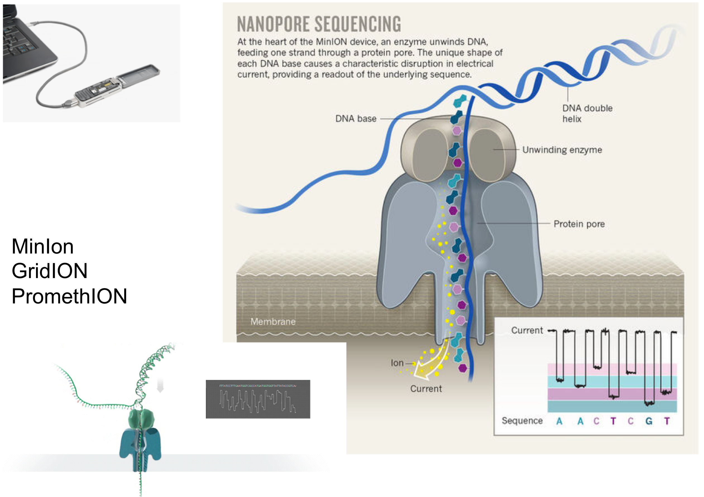

Long read sequencing
Nicolas Delhomme, Nathaniel Street, Bastian Schiffthaler
Learning Objectives
At the end of this lecture you will be able to:
- Describe the extant 3rd generation technologies
- Appraise 3rd gen library preparation limitations
- Explain the PacBio IsoSeq preprocessing workflow
A historical perspective
| Founded | Name | Defunct |
|---|---|---|
| 2003 | Helicos BioSciences | 2012 |
| 2004 | Pacific BioSciences | |
| 2005 | 454 Life Sciences* | 2013 |
| 2005 | Oxford Nanopore | |
| 2007 | Solexa* (Illumina) | |
| 2018 | PacBio* (Illumina) |
* next-generation sequencing for illustration purposes
Sequencing methods
PacBio
- Single molecule real-time sequencing-by-synthesis
- Observe a single polymerase as bases incorporated
- Uses phospholinked nucleotides, each base emits characteristics signal
- Kilobase length reads and read phasing (3 bp per second)
Sequencing methods
Nanopore
- Sequencing by conformational change of a pore
- Pull DNA though a nanopore a few bases at a time and record characteristic electrical signals emitted due to the conformational change of the pore
PacBio Sequel
- 1 million ZMW per SMRT cell
- Average read length > 10kbp
- Output of 7.6 Gb
- Run time of 30m - 20h
- Runs 1 - 16 cells at a time
PacBio template preparation

The Zero Mode Waveguide (ZMW)
PacBio sequencing
PacBio Read Structure

PacBio Consensus Accuracy

A Norway Spruce Example

Predicted Gene consistent with PacBio read
Let's take a look
Remarks
- cDNA sequencing
- not amplification free
- 300ng
- 0.5-4M reads for a 10h movie
Oxford Nanopore
Product Range
Let's Take A Look
Quantitative RNA-seq: PCR-cDNA, PCR-free Direct cDNA and Direct RNA sequencing
Nanopores allow direct sequencing of RNA strands, giving full-length reads with low bias
Remarks
- different protocols: PCR, PCR-free, Direct
- less bias than Illumina (GC and length)
- less throughput than PacBio
- More: https://www.nature.com/articles/s41598-018-29334-5

American astronaut Kate Rubins with a MinION sequencer on the ISS in August 2016.
Wait! HMW?
How do I get High Molecular Weight (HMW) DNA (or RNA for that matter)?
Pulse Field Gel Electrophoresis
- Needed to size large fragments of DNA
- Fragments larger than 15-20Kb migrate at the same speed on a standard gel
Pippin and BluePipping System
- PippinPrep: Short Read NGS Library Construction –inserts from 100bp to 1.5kb
- BluePippin–11+bp –50Kb+ using PFGE
More Alternatives are Coming
https://docs.wixstatic.com/ugd/5518db_31e70e1679124a06b7e92121a1594898.pdf
https://docs.wixstatic.com/ugd/5518db_31e70e1679124a06b7e92121a1594898.pdf
Is Longer DNA Always Better?
- With ONT and PacBio only a small fractions of DNA molecules are sequenced
- Short molecules contribute disproportionately to weight of quantified DNA
https://albertsenlab.org/why-is-it-important-to-remove-short-molecules/
Comparison to Illumina
- Advantages
- contiguity, biologically relevant transcripts, less bias
- Inconveniences
- cost, low throughput, wet-lab
- (error rate) lowly expressed transcripts won't be corrected as well
PacBio Data (pre-) processing
What is Available?
What Will We Do Today?
https://github.com/PacificBiosciences/IsoSeq/blob/master/README.md
And Some More Details
https://github.com/PacificBiosciences/IsoSeq/blob/master/isoseq-clustering.md
https://github.com/PacificBiosciences/IsoSeq/blob/master/isoseq-deduplication.md
What Does It Do Now?
Learning Objectives
At the end of this lecture you will be able to:
- Describe the extant 3rd generation technologies
- Appraise 3rd gen library preparation limitations
- Explain the PacBio IsoSeq preprocessing workflow